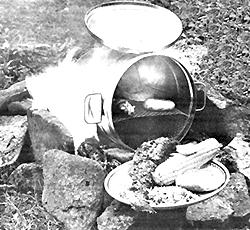

Here's a "budget" piece of camping equipment that you can make in minutes!
Now that summer is upon us, it's a sure bet that a great many folks will be taking backpacking trips through the forests or countryside . . . for exercise, education, or just plain pleasure. Naturally, any hiker-novice or expert-is going to be concerned about his or her ability to minimize the weight of the packed goods while taking maximum advantage of storage space . . . and, if you go on overnight excursions or any trip during which you plan to cook, carrying such a necessity as a stove can be a real thorn in the side . . . and a pain in the back!
There's no need, however, to forgo a satisfying cooked meal while away from home, if you build MOTHER's inexpensive, easily constructed camp oven. The obvious benefits of its design (sturdiness, light weight, and small size) tell only half the story: The real beauty of this cooker is that not only can it be used between meals to store food or other goods, butbecause it's airtight and thus waterproof -it can serve as a drinking water container . . . or even function as a washbasin for plates and utensils.
MOTHER's backpack oven is laughably simple to build (it takes less than five minutes to construct), and-unless you have to purchase some of the easily scrounged components-can be assembled for virtually nothing. (If you do have to buy parts, they're all available in any hardware store for a total of about $3.00.)
Start by locating a round or square lard can (or any other lidded, and preferably "handled", metal container that measures about 9" wide and 12" tall). Using an awl or a sharp nail, pierce both the lid's edge and the upper lip of the can to form two holes-1/2" apart-in each piece. (To facilitate opening the cover fully, take the time to elongate these openings with your tool.)
Next, pass a loop of wire through the can and its cap and twist the free ends to form a loose ring, which will serve as a hinge for your oven's lid. Finally, take a section of heavy, galvanized hardware cloth (our metal web measured 10-1/2" X 18"), and bend its two opposing edges at right angles to its flat surface . . . so that it will fit inside the airtight stove snugly-the long way-and act as a shelf for a cooking tin or a piece of foil to rest upon. (The exact position of this rack within the oven is up to you . .. but remember that you must leave enough room above it for the pan and victuals.) And, for the sake of safety, it's best to build a "cleansing" fire to eliminate any fumes from the galvanization before cooking . You could also, of course, simply construct your rack out of some other material . . . try scavenging an old metal barbecue grille, for example.
To use the tin oven, merely place the food of your choice (on foil or in a pan) on top of the wire shelf, add a small amount of water if you want the edibles steamed, press the container's cap on securely, and rest the stove on its side upon several rocks or a couple of logs placed within or around your campfire. (To make cleanup chores easier, you might want to rub a layer of soap over the skin of the can so that soot will stick to the cleanser-which can be rubbed off-rather than to the metal itself.)
After the required amount of baking time (which will differ from dish to dish, of course), open up your campsite oven and enjoy the hot meal. You'll find that food prepared in this manner will require a minimum amount of fuel (which will make your fire safer) and be absolutely delicious as well!
|
 |
|
|